1
Proteína
"No se olviden de la proteína en todas las loncheras. Esto es fundamental, es necesario."
Pollo · Carne · Huevo · Queso · Atún · Jamón de cerdo
Te enseño la Regla 3+1: la fórmula simple para que cada lonchera sea 100% comida real, sin pelear con el reloj cada mañana.
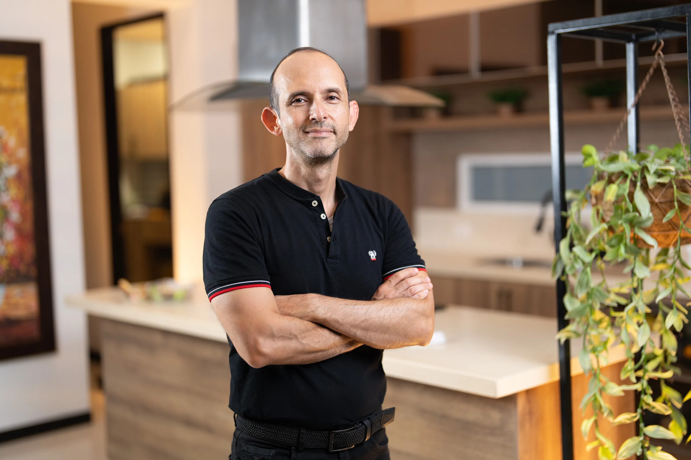
Te explico, en mi cocina, de qué se trata Loncheras Inteligentes y la Regla 3+1.
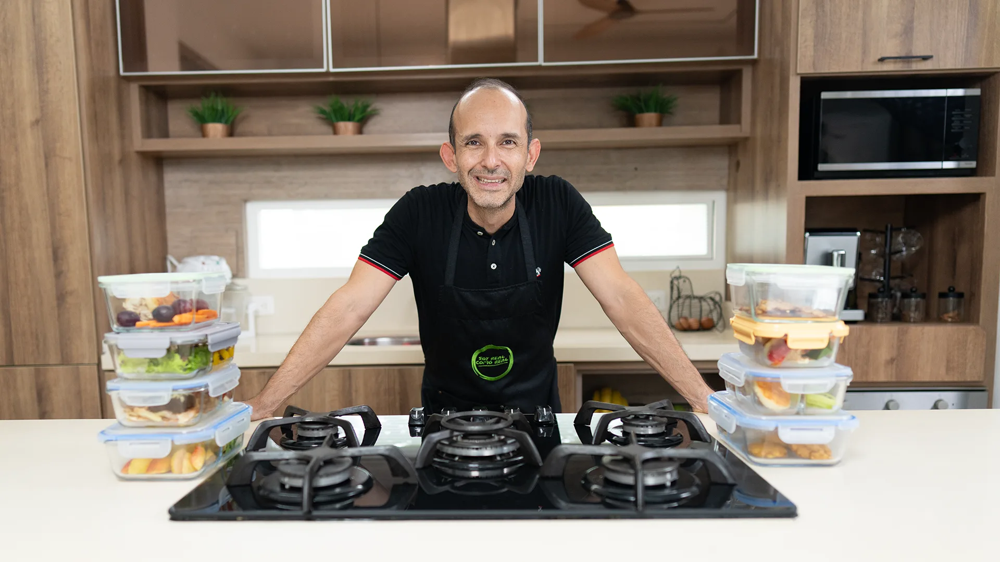
Creé este taller como médico que entiende de nutrición y de la vida real. Una decisión de $ 114.000 puede cambiar tus semanas.
Quiero mi lonchera real3 piezas + 1 hidratación. Cero restricciones extremas, cero contar calorías, cero comprar productos "fitness" caros. "Es la fórmula que nunca falla."
"No se olviden de la proteína en todas las loncheras. Esto es fundamental, es necesario."
"Los niños necesitan sí o sí aporte de carbohidratos para esas explosiones de actividad física en el colegio."
"¿Cuánta fruta? Una porción. Una unidad o una taza." Vitaminas, minerales y fibra para que la digestión funcione.
"Las bebidas van a ser sin azúcar y no jugos." Agua, agua con limón o té sin azúcar, la mejor amiga del bienestar.
Responde con la lonchera que preparaste hoy (o pensabas preparar). Te doy mi diagnóstico al instante, sin email y sin trampas.
¿Quieres el diagnóstico completo + plan personalizado al email? Hacer el test extendido →
"Mi nombre es Óscar Rosero, médico endocrinólogo experto en estilos de vida y un convencido de que la comida real nos va a sanar."
Soy especialista en nutrición metabólica y hormonas. En mi consulta atiendo a familias con hijos en el colegio, profesionales en la oficina y pacientes con resistencia a la insulina, hipotiroidismo y sobrepeso. Mi filosofía: estrategias prácticas, sin juicios ni obsesiones, aplicables a la vida real.
Descubre si este programa se adapta a tu estilo de vida y a tus objetivos de salud.
Que quieren alimentar bien a sus hijos sin volverse locos cada mañana.
Que quieren comer mejor sin gastar más ni complicarse con ingredientes raros.
Que quiera aprender a preparar comida rápida, saludable y rica.
Transforma tu alimentación y la de tu familia con estrategias prácticas que aplico cada día en mi consulta.
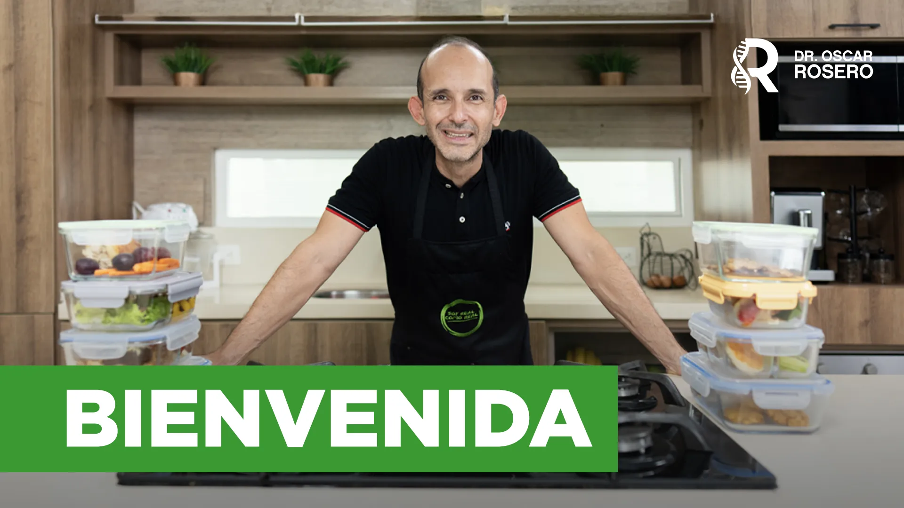
Te doy la bienvenida y te cuento cómo vamos a trabajar juntos: "la comida real nos va a sanar."
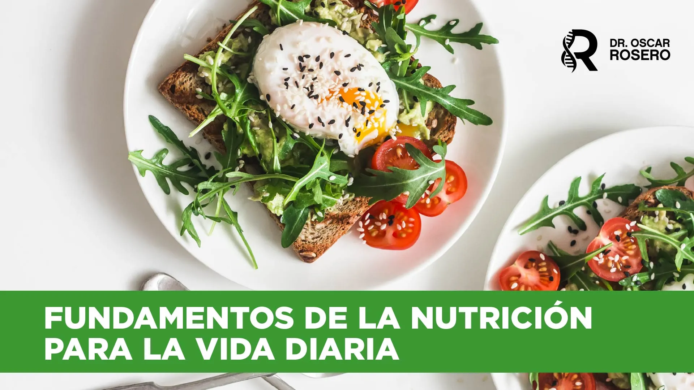
Macros y micros: "necesitamos los tres macronutrientes, ninguno es excluyente."

Carbohidratos para esas explosiones de actividad. Proteína para mantenimiento. Grasas para hormonas.
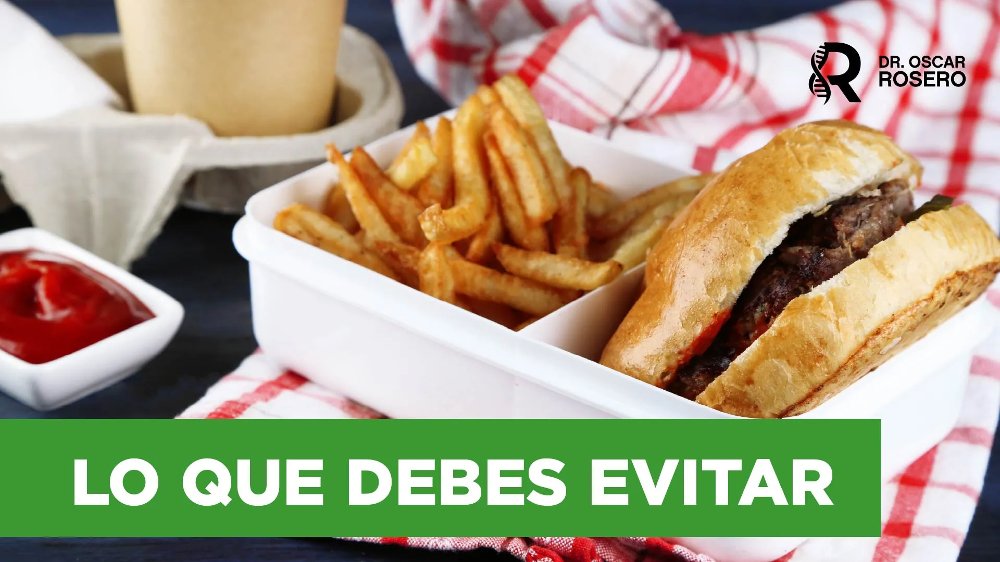
"Los ultraprocesados son los enemigos." Azúcar, harina refinada y grasas vegetales industriales.
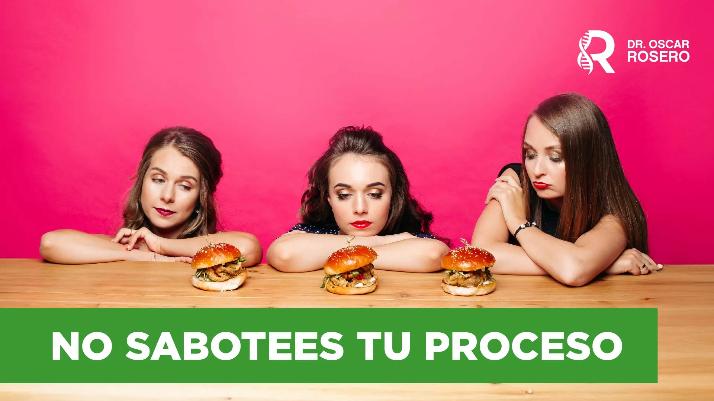
"Comer bien es hacerlo al 100% siempre." Por qué un solo día trampa puede inflamarte hasta 48 horas.

"Si los refrigerios salen de tu casa, van a ser 100 veces mejores que lo que vas a comprar."
Panadería, comida callejera y cafetería: por qué caemos y cómo planear los refrigerios para no volver a improvisar.

"Tus comidas principales deben estar repletas de proteína." Para no llegar al snack con hambre real.

"No lo compres porque te lo comes." Voluntad, hidratación y rutinas para que los antojos vayan disminuyendo.
Del colegio a la oficina: la fórmula sirve para tus hijos y también para ti.

1 proteína + 1 carbo + 1 vegetal o fruta + 1 hidratación. "La regla del 3+1 nunca falla."
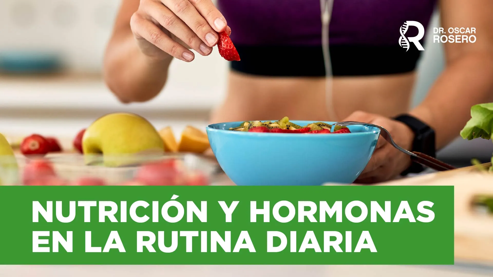
Por qué un capuchino con croissant te dispara la insulina, la leptina y eleva el cortisol.
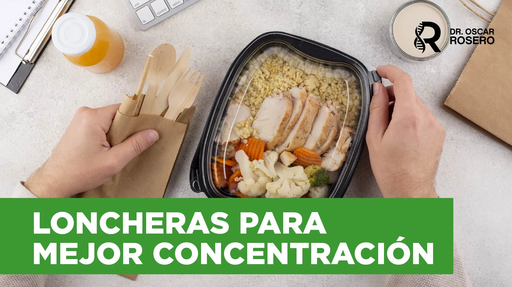
"El cerebro solo trabaja con glucosa." Combinaciones para no caer en hipoglucemia y rendir en clase u oficina.
Cierre del taller. "Tu cuerpo es lo más sagrado. Y si estás aquí, es por algo."
Todas grabadas paso a paso. Hechas en AirFryer u horno, con ingredientes que ya tienes en casa.
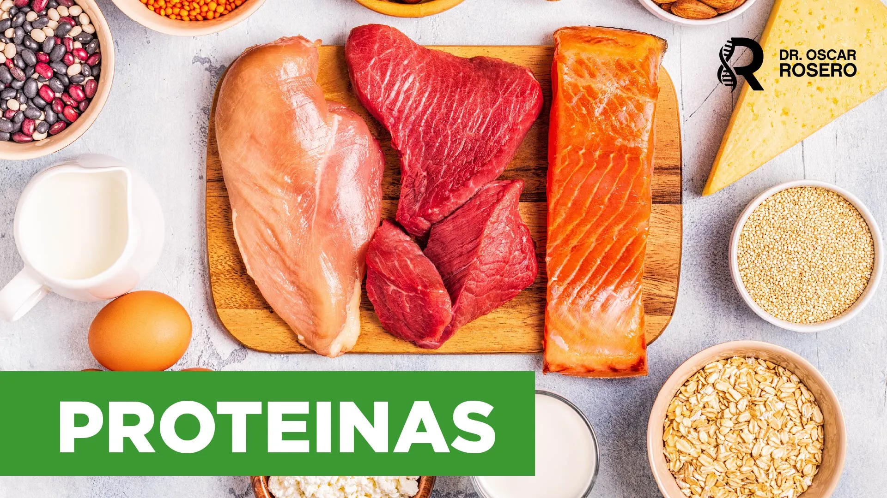
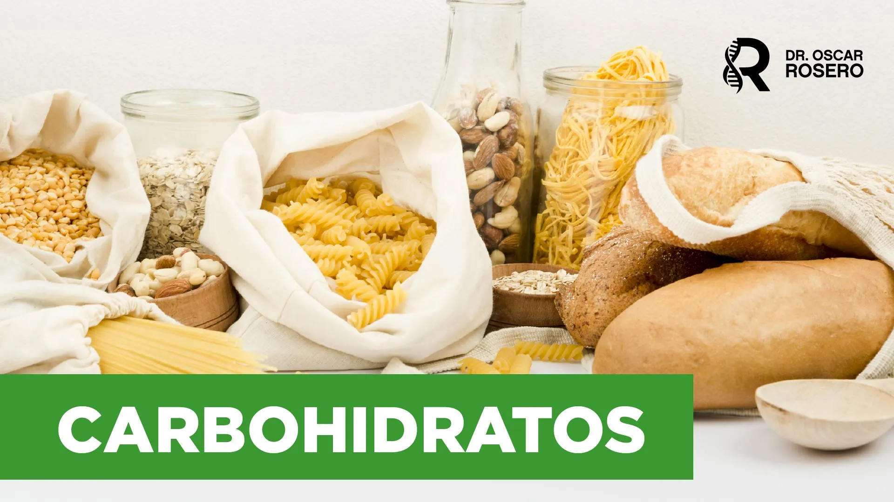

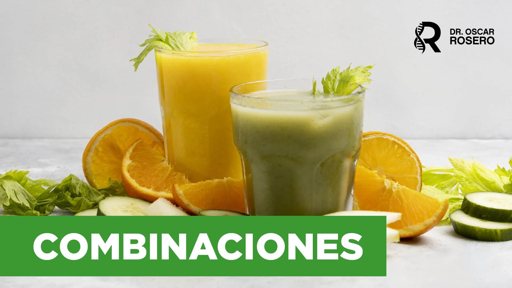
Dos clases extra que te resuelven las dos preguntas que más me hacen en consulta: cómo comprar bien y cómo alimentar a un niño en pleno crecimiento.

Te enseño a leer una etiqueta en 10 segundos y a no caer en el cuento de los empaques "fitness". Vas al supermercado sabiendo exactamente qué meter al carro y qué dejar en el estante.

Vas a saber qué necesita tu hijo según su edad y cómo dárselo sin complicarte.
Comentarios reales en Instagram. Sin filtros, sin actores.
"Esta información es una bendición, sabemos que no es fácil cambiar el chip pero podemos ir paso a paso y educarnos por nuestros niños que son las nuevas generaciones."
"Súper, saludable, real y aparte mucho más económico que un paquete de papas y una pony malta — son las onces más comunes que he visto en los colegios."
"Una buena alimentación es una muestra de amor muy grande hacia los hijos."
"Qué bueno esos consejos y ejemplos de meriendas para nuestros niños."
"Mil gracias por sus sabios consejos. Dios lo bendiga por informarnos y orientarnos para tener salud y cambiar nuestros hábitos."
"Me encanta cómo nos hace valorar la comida real."
Dos loncheras, un solo día de colegio. Mira cuál nutre y cuál solo llena.
Efecto metabólico: pico de insulina, hipoglucemia 1 hora después, antojo de azúcar a media tarde, inflamación sistémica.
Efecto metabólico: saciedad real hasta el almuerzo, energía estable, cero antojos, metabolismo sano.
"Una arepa con queso y un huevo cocido aportan más nutrición a menor costo que una barra de proteína procesada."
— Dr. Óscar Rosero, Documento del taller
Comparación cualitativa basada en patrones de compra y precios promedio.
Precio estimado en tu moneda local con la tasa de cambio de Hotmart. El cobro final lo procesa Hotmart en checkout ($30 USD base).